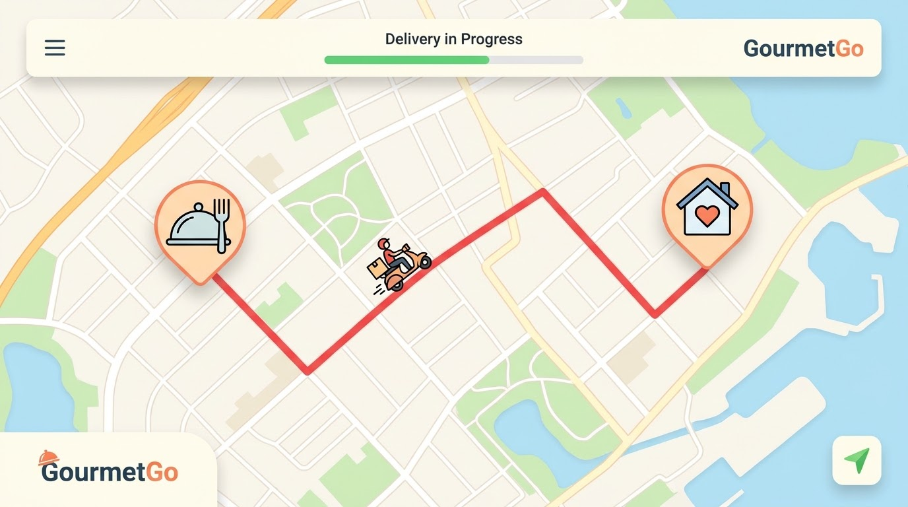

Estimated Delivery Time
12:45 PM
15 mins left
Order Status #FF-8921
Order Received
12:30 PM • Kitchen accepted order
Preparing in Kitchen
Chef is firing up the wood oven
Out for Delivery
Driver assigned to route
DM
David Miller